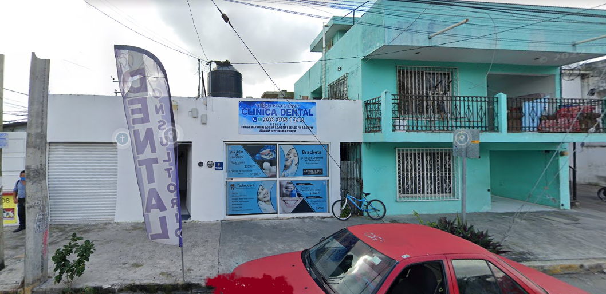
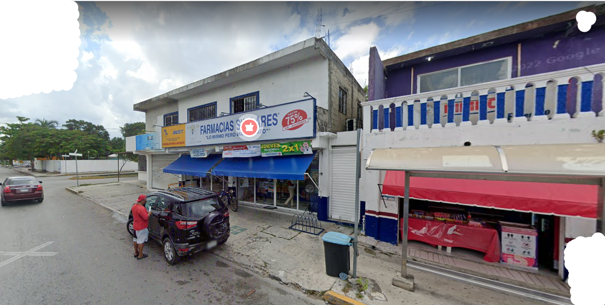
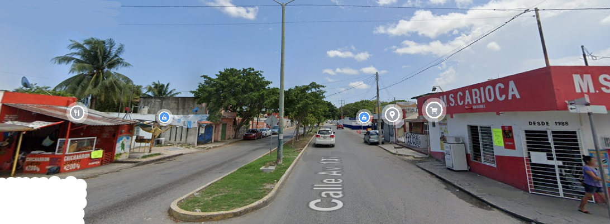
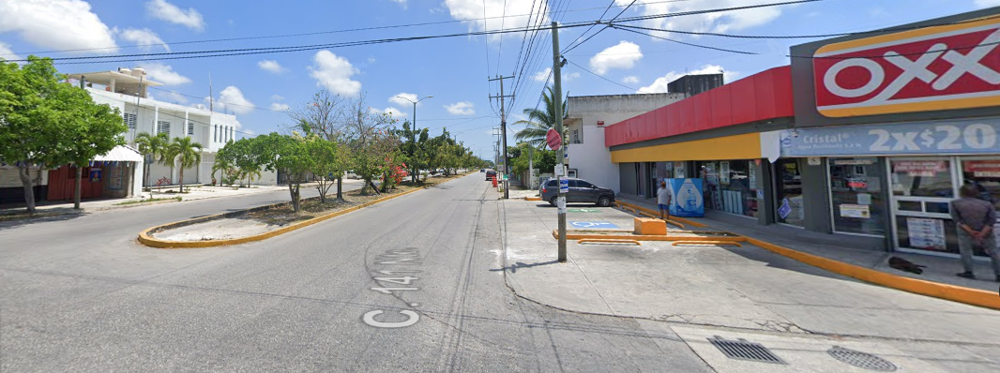

Ubicación de la Escuela
Ubicación: Bachilleres Plantel Cancún 2, Av. Francisco I. Madero 30, 77538, Q.R.
Lugares de Referencia




Otro metodo más fácil de encontrar
Si quieres ver más a detalle como puedes llegar o que otros lugares de referencia se encuentran por la zona ingres al link para saber más.
Más Detalles...